컴퓨터응용가공산업기사 (2015-03-08 기출문제)
1과목: 기계가공법 및 안전관리
1. 드릴링 머신에서 회전수 160rpm, 절삭속도 15m/min일 때, 드릴 지름(mm)은 약 얼마인가?
- 29.8
- 35.1
- 39.5
- 15.4
(정답률: 68%)

2. 재해 원인별 분류에서 인적원인(불안전한 행동)에 의한 것으로 옳은 것은?
- 불충분한지지 또는 방호
- 작업장소의 밀집
- 가동 중인 장치를 정비
- 결함이 있는 공구 및 장치
(정답률: 82%)
3. 중량물의 내면 연삭에 주로 사용되는 연삭방법은?
- 트래버스 연삭
- 플렌지 연삭
- 만능 연삭
- 플래내터리 연삭
(정답률: 59%)
4. 블록 게이지의 부속 부품이 아닌 것은?
- 홀더
- 스크레이퍼
- 스크라이버 포인트
- 베이스 블록
(정답률: 75%)
5. 목재, 피혁, 직물 등 탄성이 있는 재료로 바퀴 표면에 부착시킨 미세한 연삭입자로써 버핑하기 전 가공물 표면을 다듬질하는 가공방법은?
- 폴리싱
- 롤러 가공
- 버니싱
- 숏 피닝
(정답률: 66%)
6. 특정한 제품을 대량 생산할 때 적합하지만, 사용범위가 한정되며 구조가 간단한 공작기계는?
- 범용 공작기계
- 전용 공작기계
- 단능 공작기계
- 만능 공작기계
(정답률: 80%)
7. 중량 가공물을 가공하기 위한 대형 밀링머신으로 플레이너와 유사한 구조로 되어있는 것은?
- 수직 밀링머신
- 수평 밀링머신
- 플래노 밀러
- 회전 밀러
(정답률: 70%)
8. 분할대에서 분할 크랭크 핸들을 1회전하면 스핀들은 몇 도(°) 회전 하는가?
- 36°
- 27°
- 18°
- 9°
(정답률: 67%)
9. 가공물을 절삭할 때 발생되는 칩의 형태에 미치는 영향이 가장 적은 것은?
- 공작물 재질
- 절삭속도
- 윤활유
- 공구의 모양
(정답률: 74%)
10. 지름이 100mm인 가공물에 리드 600mm의 오른나사 헬리컬 홈을 깎고자 한다. 테이블 이송나사의 피치가 10mm인 밀링머신에서, 테이블 선회각을 tanα로 나타낼 때 옳은 값은?
- 31.41
- 1.90
- 0.03
- 0.52
(정답률: 24%)
11. 수준기에서 1눈금의 길이를 2mm로 하고, 1눈금이 각도 5“(초)를 나타내는 기포관의 곡률반경은?
- 7.26m
- 72.6m
- 8.23m
- 82.5m
(정답률: 30%)
12. 연삭숫돌바퀴의 구성 3요소에 속하지 않는 것은?
- 숫돌입자
- 결합제
- 조직
- 기공
(정답률: 71%)
13. 선반기공에서 양 센터작업에 사용되는 부속품이 아닌 것은?
- 돌림판
- 돌리개
- 맨드릴
- 브로치
(정답률: 79%)
14. -18μm의 오차가 있는 블록 게이지에 다이얼 게이지를 영점 셋팅하여 공작물을 측정하였더니, 측정값이 46.78mm 이었다면 참값(mm)은?
- 46.960
- 46.798
- 46.762
- 46.603
(정답률: 49%)
15. 공작기계에서 절삭을 위한 세가지 기본운동에 속하지 않는 것은?
- 절삭운동
- 이송운동
- 회전운동
- 위치조정운동
(정답률: 64%)
16. 지름 50mm인 연삭숫돌을 7000rpm으로 회전시키는 연삭작업에서, 지름 100mm인 가공물을 연삭숫돌과 반대방향으로 100rpm으로 원통 연삭할 때 접촉점에서 연삭의 상대속도는 약 몇 m/min인가?
- 931
- 1099
- 1131
- 1161
(정답률: 52%)
17. 게이지 종류에 대한 설명 중 틀린 것은?
- pitch 게이지 : 나사 피치 측정
- thickness 게이지 : 미세한 간격(두께) 측정
- radius 게이지 : 기울기 측정
- center 게이지 : 선반의 나사 바이트 각도 측정
(정답률: 62%)
18. 선반에서 나사가공을 위한 분할너트(half nut)는 어느 부분에서 부착되어 사용하는가?
- 주축대
- 심압대
- 왕복대
- 베드
(정답률: 58%)
19. 절삭온도와 절삭조건에 관한 내용으로 틀린 것은?
- 절삭속도를 증대하면 절삭온도는 상승한다.
- 칩의 두께를 크게 하면 절삭온도가 상승한다.
- 절삭온도는 열팽창 때문에 공작물 가공치수에 영향을 준다.
- 열전도율 및 비열 값이 작은 재료가 일반적으로 절삭이 용이하다.
(정답률: 70%)
20. 표준 맨드릴(mandrel)의 테이퍼 값으로 적합한 것은?
- 1/10 ~ 1/20 정도
- 1/50 ~ 1/100 정도
- 1/100 ~ 1/ 1000 정도
- 1/200 ~ 1/400 정도
(정답률: 68%)
2과목: 기계설계 및 기계재료
21. α-Fe가 723℃에서 탄소를 고용하는 최대한도는 몇 % 인가?
- 0.025
- 0.1
- 0.85
- 4.3
(정답률: 47%)
22. 켈멧(kelmet) 합금이 주로 쓰이는 곳은?
- 피스톤
- 베어링
- 크랭크 축
- 전기저항용품
(정답률: 65%)
23. 스테인리스강의 기호로 옳은 것은?
- STC3
- STD11
- SM20C
- STS304
(정답률: 76%)
24. 항온 열처리의 종류가 아닌 것은?
- 마퀜칭
- 마템퍼링
- 오스템퍼링
- 오스드로잉
(정답률: 77%)
25. 구리의 성질을 설명한 것으로 틀린 것은?
- 전기 및 열전도도가 우수하다.
- 합금으로 제조하기 곤란하다.
- 구리는 비자성체로 전기전도율이 크다.
- 구리는 공기 중에서는 표면이 산화되어 암적색으로 된다.
(정답률: 76%)
26. 공석강을 오스템퍼링 하였을 때 나타나는 조직은?
- 베이나이트
- 솔바이트
- 오스테나이트
- 시멘타이트
(정답률: 44%)
27. 주철의 결점을 없애기 위하여 흑연의 형상을 미세화, 균일화하여 연성과 인성의 강도를 크게 하고, 강인한 펄라이트 주철을 제조한 고급주철은?
- 가단 주철
- 칠드 주철
- 미하나이트 주철
- 구상 흑연 주철
(정답률: 46%)
28. 복합재료에 널리 사용되는 강화재가 아닌 것은?
- 유리섬유
- 붕소섬유
- 구리섬유
- 탄소섬유
(정답률: 48%)
29. 담금질한 강의 잔류오스테나이트를 제거하고 마르텐자이트를 얻기 위하여 0℃이하에서 처리하는 열처리는?
- 심냉처리
- 염욕처리
- 오스템퍼링
- 항온변태처리
(정답률: 83%)
30. 고주파 경화법 시 나타나는 결함이 아닌 것은?
- 균열
- 변형
- 경화층 이탈
- 결정 입자의 조대화
(정답률: 68%)
31. 다음 중 축 중심선에 직각 방향과 축방향의 힘을 동시에 받는데 쓰이는 베어링으로 가장 적합한 것은?
- 앵귤러 볼 베어링
- 원통 롤러 베어링
- 스러스트 볼 베어링
- 레이디얼 볼 베어링
(정답률: 48%)
32. 3000kgf의 수직방향 하중이 작용하는 나사잭을 설계할 때, 나사잭 볼트의 바깥지름은 얼마인가? (단, 허용응력은 6kgf/mm2, 골지름은 바깥지름의 0.8배 이다.)
- 12mm
- 32mm
- 74mm
- 126mm
(정답률: 51%)
33. 지름 50mm의 연강축을 사용하여 350rpm으로 40kW를 전달할 수 있는 묻힘 키의 길이는 몇 mm 이상인가? (단, 키의 허용전단응력은 49.⑤MPa, 키의 폭과 높이는 bxh = 15mm × 10mm 이며, 전단저항만 고려한다.)
- 38
- 46
- 60
- 78
(정답률: 42%)
34. 커플링의 설명으로 옳은 것은?
- 플렌지커플링은 축심이 어긋나서 진동하기 쉬운데 사용한다.
- 플렉시블커플링은 양축의 중심선이 일치하는 경우에만 사용한다.
- 올덤커플링은 두축이 평행으로 있으면서 축심이 어긋났을 때 사용한다.
- 원통커플링은 지름은 축 중심선의 임의의 각도로 교차되었을 때 사용한다.
(정답률: 59%)
35. 다음 중 브레이크 용량을 표시하는 식으로 옳은 것은? (단, μ는 마찰계수, p는 브레이크 압력, v는 브레이크륜의 주속이다.)
- Q = μpv
- Q = μpv2
- Q = μp/v
- Q = μ/pv
(정답률: 60%)
36. 평 벨트와 비교하여 V벨트의 특징으로 틀린 것은?
- 전동효율이 좋다.
- 고속운전이 가능하다.
- 정숙한 운전이 가능하다.
- 축간거리를 더 멀리 할 수 있다.
(정답률: 71%)
37. 다음 중 용접 이음의 장점으로 틀린 것은?
- 사용재료의 두께에 제한이 없다.
- 용접이음은 기밀유지가 불가능하다.
- 이음 효율을 100%까지 할 수 있다.
- 리벳, 볼트 등의 기계 결합 요소가 필요 없다.
(정답률: 72%)
38. 코일 스프링에서 유효 감김수를 2배로 하면 같은 축 하중에 대하여 처짐량은 몇 배가 되는가?
- 0.5
- 2
- 4
- 8
(정답률: 60%)
39. 재료를 인장시험 할 때, 재료에 작용하는 하중을 변형전의 원래 단면적으로 나눈 응력은?
- 인장응력
- 압축응력
- 공칭응력
- 전단응력
(정답률: 45%)
40. 표준 스퍼기어에서 모듈 4, 잇수 21개, 압력각이 20° 라고 할 때, 법선피치(pn)은 약 몇 mm인가?
- 11.8
- 14.8
- 15.6
- 18.2
(정답률: 27%)
3과목: 컴퓨터응용가공
41. 3차원 형상 표현방법 중 CSG(Constructive Solid Geometry)에 대한 설명으로 옳은 것은?
- 프리미티브(primitive)와 불리언 연산자에 의한 표현
- 곡면에 의한 표현
- 스위프에(sweep) 의한 표현
- 경계표현
(정답률: 72%)
42. 물리적 성질(체적, 관성, 무게, 모멘트 등) 제공이 가능한 방법은?
- 와이어프레임 모델링(wireframe modeling)
- 시뮬레이션 모델링(simulation modeling)
- 곡면 모델링(surface modeling)
- 솔리드 모델링(solid modeling)
(정답률: 85%)
43. 곡선의 표현식에 매듭값(knot value)을 사용하는 것은?
- Bezier 곡선
- Hermite 곡선
- B-spline 곡선
- 쌍곡선
(정답률: 48%)
44. NURBS(Non-Uniform Rational B-Spline)곡선에 대한 설명 중 틀린 것은?
- 조정점을 호모지니어스 좌표(homogeneous coordinate)계로 표현한다.
- 매듭값(knot value)간의 간격이 일정하다.
- 곡선의 형상을 국부적으로 수정할 수 있다.
- 원을 정확하게 표현할 수 있다.
(정답률: 44%)
45. 다음 식은 무엇을 나타낸 방정식인가?
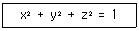
- 원(circle)
- 포물선(parabola)
- 타원(ellipse)
- 구(sphere)
(정답률: 49%)
46. 피트ㆍ프로그래밍에서 일반적으로 지원하는 공구 보정가능으로 틀린 것은?
- 공구반경 보정
- 공구길이 보정
- 공구속도 보정
- 공구위치 보정
(정답률: 62%)
47. 도면 데이터를 교환하기 위해 사용되는 DXF(Drawing Interchange Format) 파일의 구성 요소로 틀린 것은?
- Header Section
- Tables Section
- Entities Section
- Post Section
(정답률: 52%)
48. 다면체에서 한 면(face)의 평면법선벡터는 (1,1,1)이다. 다음 중 후양면(back-face) 제거 알고리즘에 의해 이 면이 보이는 경우는? (단, 벡터 M은 이 면에서 관찰자로의 벡터이다.)
- M = (-1, 0, -1)
- M = (0, 1, 0)
- M = (-1, 0, 0)
- M = (0, -1, 0)
(정답률: 56%)
49. Wire-EDM과 같이 상하 2축씩을 가지고 있어서 임의의 테이퍼 형상을 가공할 수 있는 것은?
- 2축가공
- 3축가공
- 4축가공
- 5축가공
(정답률: 60%)
50. 데이터 전송방식인 RS-232C에 대한 설명으로 틀린 것은?
- 병렬전송 방식이다.
- 비교적 단거리, 낮은 데이터 전송률을 가진 전송 방식이다.
- Parity Check Bit는 데이터의 전송여부를 체크한다.
- 전송속도는 BPS 또는 Band-rate로 나타낸다.
(정답률: 54%)
51. 분산 처리형 시스템이 갖추어야 할 기본 성능이 아닌 것은?
- 여러 시스템 중에서 일부 시스템이 고장이 발생하더라도 나머지는 정상작동 되어야 한다.
- 자료 처리 및 계산 작업은 모두 주(main) 시스템에서 이루어져야 한다.
- 구성된 시스템별 자료는 다른 컴퓨터 시스템 자료의 내용에 변화를 주지 말아야 한다.
- 사용자가 구성한 자료나 프로그램을 다른 사용자가 사용하고자 할 때는 정보 통신망을 통해서 언제라도 해당 자료를 사용하거나 보내줄 수 있어야 한다.
(정답률: 74%)
52. 곡면 모델링 방법에 따른 곡면 분류로 틀린 것은?
- 회전(revolve) 곡면
- 토폴로지(topolory) 곡면
- 블렌딩(blending) 곡면
- 스윕(sweep) 곡면
(정답률: 68%)
53. 곡면 패치의 4개의 경계곡선을 선형 보간하여 생성되는 곡면은?
- Ferguson 곡면
- Coon’s 곡면
- Bezier 곡면
- Polygonal 곡면
(정답률: 81%)
54. 솔리드 표현방식 중 B-rep 방식의 기본 데이터 구조로 틀린 것은?
- 정점
- 면
- 모서리
- 직육면체
(정답률: 70%)
55. CAM 시스템을 이용하여 NC 데이터 생성시 계산된 공구 경로를 각 기계 콘트롤러에 맞게 NC 데이터를 만들어 주는 작업은?
- CNC
- DNC
- post processing
- part program
(정답률: 73%)
56. 가벼우면서도 적은 부피를 가지는 평판 디스플레이로 틀린 것은?
- 플라즈마 판 디스플레이
- 음극선관(CRT) 디스플레이
- 액정 디스플레이
- 전자 발광 디스플레이
(정답률: 72%)
57. 솔리드 모델링 기법의 일종인 특징 형상 모델링 기법의 성격에 대한 설명으로 틀린 것은?
- 모델링 입력을 설계자 또는 제작자에게 익숙한 형상 단위로 수행하는 것이다.
- 전형적인 특징 형상은 모따기(chamfer), 구멍(hole), 슬롯(slot), 포켓(pocket) 등과 같은 것이다.
- 모델링된 입체를 제작하는 단계의 공정계획에서 매우 유용하게 사용될 수 있다.
- 사용 분야와 사용자에 관계없이 특징 형상에 종류가 항상 일정하다는 것이 장점이다.
(정답률: 66%)
58. 곡면형상을 구성하는 가장 작은 단위의 형상 요소를 패치(patch)라고 한다. 이러한 패치의 종류에 해당되지 않는 것은?
- Coon’s patch
- scatch patch
- ruled patch
- sweep patch
(정답률: 53%)
59. 한 개의 점 P(15, 20)을 원점을 중심으로 반시계 방향으로 30° 로 회전변환 후의 좌표 값은?
- P(3.99, 24.82)
- P(2.99, 24.82)
- P(2.99, 22.99)
- P(3.99, 22.99)
(정답률: 54%)
60. 일반적인 유연생산시스템(flexible manufacturing system, FMS)의 장점으로 틀린 것은?
- 높은 기계 가동율로 인하여 필요한 기계수가 감소한다.
- 서로 다른 부품이 뱃치(batch)로 분리되어 치리되지 않으므로 재공재고(work-in-process, WIP)가 뱃치생산 모드에서 보다 증가한다.
- 높은 생산율과 직접노동에 대한 낮은 의존도로 FMS에서 노동시간당 생산성이 높다.
- 높은 수준의 자동화는 무인으로 긴 시간동안 시스템을 운전할 수 있게 해준다.
(정답률: 55%)
4과목: 기계제도 및 CNC공작법
61. 그림과 같이 나사 표시가 있을 때, 옳은 것은?
- 볼나사 호칭 지름 10인치
- 둥근나서 호칭 지름 10mm
- 미터 사다리꼴 나사 호칭 지름 10mm
- 관용 테이퍼 수나사 호칭 지름 10mm
(정답률: 81%)
62. 크롬 몰리브덴 강재의 KS 기호는?
- SMn
- SMnC
- SCr
- SCM
(정답률: 72%)
63. 다음과 같은 간략도의 전체를 표한한 것으로 가장 적합한 것은?
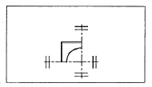
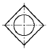
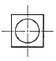
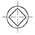
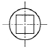
(정답률: 85%)
64. 스크레이핑 가공기호는?
- FS
- FSU
- CS
- FSD
(정답률: 80%)
65. 다음과 같이 3각법에 의한 투상도에서 누락된 정면도로 옳은 것은?
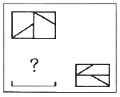
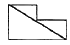
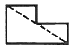
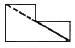
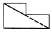
(정답률: 55%)
66. 재료 기호 “STC”가 나타내는 것은?
- 일반 구조용 압연 강재
- 기계 구조용 탄소 강재
- 탄소 공구강 강재
- 합금 공구강 강재
(정답률: 77%)
67. 표면의 결 도시방법의 기호 설명이 옳은 것은?
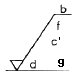
- d : 가공 방법
- g : 기준 길이
- b : 줄무늬 방향 기호
- f : Ra 이외의 표면거칠기 값
(정답률: 65%)
68. 구멍의 치수
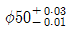
, 축의 치수는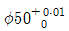
일 때, 최대 틈새는 얼마인가?- 0.04
- 0.03
- 0.02
- 0.01
(정답률: 72%)
69. 다음 중 도면의 내용에 따른 분류가 아닌 것은?
- 부품도
- 전개도
- 조립도
- 부분조립도
(정답률: 56%)
70. 구름 베어링 기호 중 안지름이 10mm인 것은?
- 7000
- 7001
- 7002
- 7010
(정답률: 72%)
71. 절삭 중 공구의 떨림이 발생시 조치사항이 아닌 것은?
- 절삭 깊이를 작게 한다.
- 공구의 돌출량을 길게 한다.
- 척킹(Chucking)등 부착 강성을 확인한다.
- 절삭이송 속도를 조정한다.
(정답률: 85%)
72. 다음 CNC선반 프로그램에서 시퀀스 번호 N40에서의 주축 회전수는 약 몇 rpm인가?
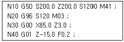
- 350
- 420
- 450
- 1200
(정답률: 58%)
73. CNC공작기계를 운전하는 중에 충돌 등 위급한 상태가 우려될 때 가장 우선적으로 취해야 할 조치법은?
- 공압을 차단한다.
- 배전반의 회로도를 점검한다.
- Mode 선택 스위치를 수동 상태로 변환한다.
- 조작반의 비상정지(emmergency stop) 버튼을 누른다.
(정답률: 87%)
74. 머시닝센터 프로그램에서 원호 가공시 I, J의 의미는?
- 원호의 시작점에서 원호의 끝점까지의 벡터량
- 원호의 중심에서 원호의 시작점까지의 벡터량
- 원호의 끝점에서 원호의 시작점까지의 벡터량
- 원호의 시작점에서 원호의 중심점까지의 벡터량
(정답률: 66%)
75. 머시닝센터 프로그램에서 N10블록 G49의 의미는?
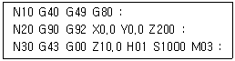
- 공구경 보정
- 공구경 보정 취소
- 공구길이 보정
- 공구길이 보정 취소
(정답률: 69%)
76. 그림과 같이 모터 축으로부터 위치 검출을 행하여 볼 스크루의 회전 각도를 검출하는 방법을 사용하는 CNC 서보기구는?
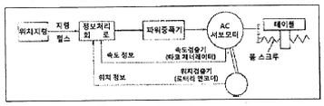
- 개방회로 방식
- 반폐쇄회로 방식
- 폐쇄회로 방식
- 반개방회로 방식
(정답률: 75%)
77. CNC선반에서 공구 기능을 설명한 것 중 옳은 것은?
- T0101 : 1번 공구를 1번 공구만 선택
- T0200 : 2번 공구와 0번 공구를 교환
- T1212 : 12번 공구를 위치보정의 12번 보정량으로 보정
- T0102 : 2번 공구를 위치보정의 1번 보정량으로 보정
(정답률: 83%)
78. CNC와이어 컷 방전가공에서 가공액의 기능이 아닌 것은?
- 극간의 절연회복
- 방전 가공부분의 냉각
- 방전 폭발 압력의 발생 억제
- 가공칩의 제거
(정답률: 53%)
79. CNC조작판의 기능 스위치 중 절삭속도에 영향을 미치는 스위치는?
- 급속 오버라이드
- 싱글 블록
- 스핀들 오버라이드
- 옵셔널 블록 스킵
(정답률: 66%)
80. 다음 그림의 점 P1에서 P2원호 경로를 가공하기 위하여 증분방식으로 프로그램을 할 때 옳은 것은?
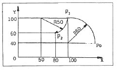
- G90 G02 X-20.0 Y-40.0 I50.0 F100 ;
- G91 G02 X-20.0 Y-20.0 J-50.0 F100 ;
- G90 G02 X20.0 Y-40.0 I-50.0 F100 ;
- G91 G02 X-20.0 Y-40.0 I-50.0 F100 ;
(정답률: 61%)
드릴 지름(mm) = 절단속도(m/min) ÷ (π × 회전수(rpm) ÷ 60)
따라서, 드릴 지름은 15 ÷ (π × 160 ÷ 60) ≈ 29.8(mm) 이다.
이유는, 드릴 지름은 절단속도와 회전수에 반비례하고, π와 비례하기 때문이다. 따라서, 회전수가 증가하면 드릴 지름은 감소하고, 절단속도가 증가하면 드릴 지름도 감소한다.